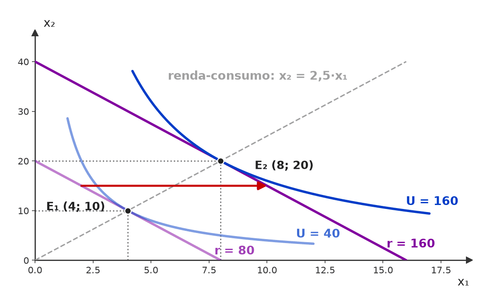
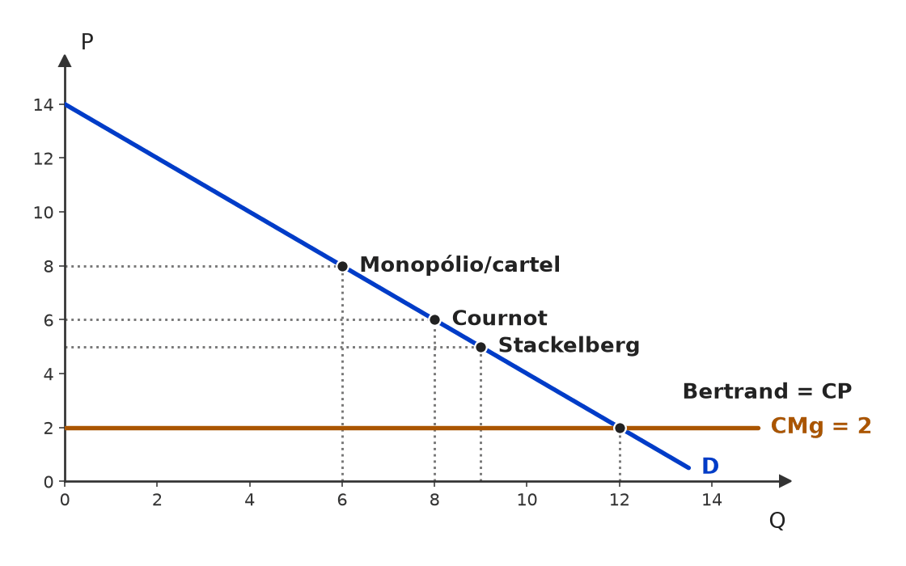
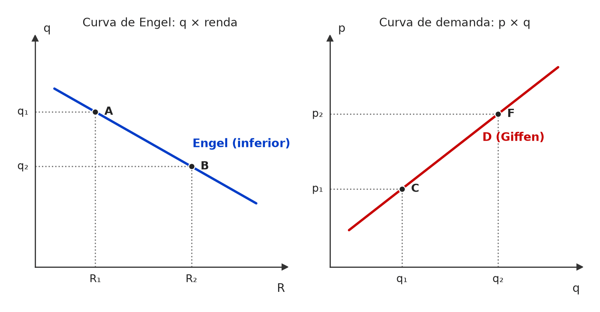
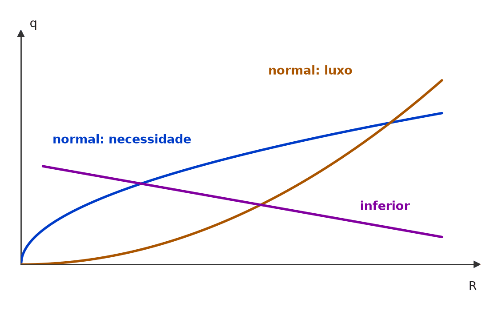
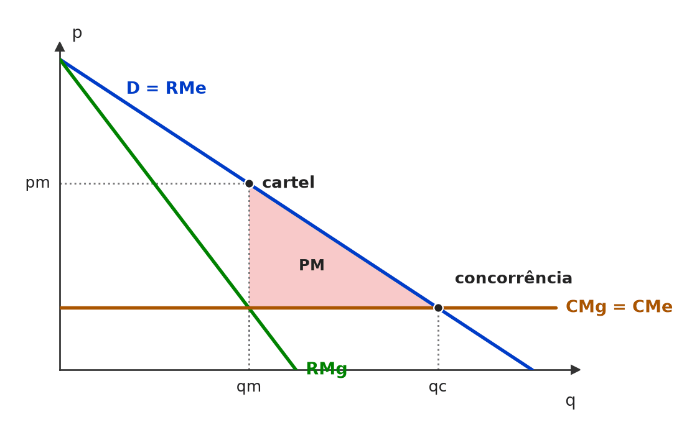
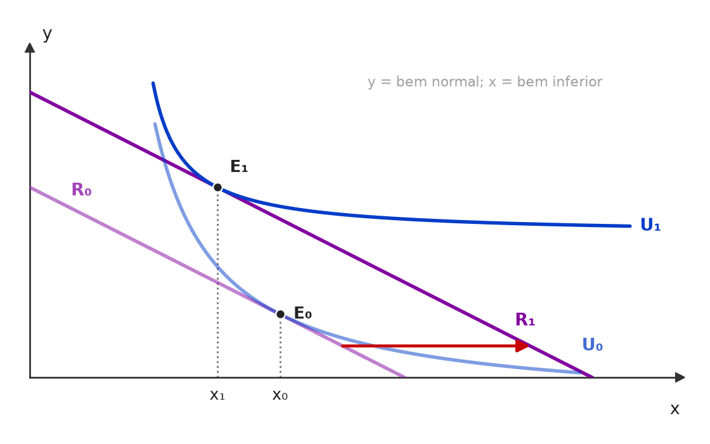
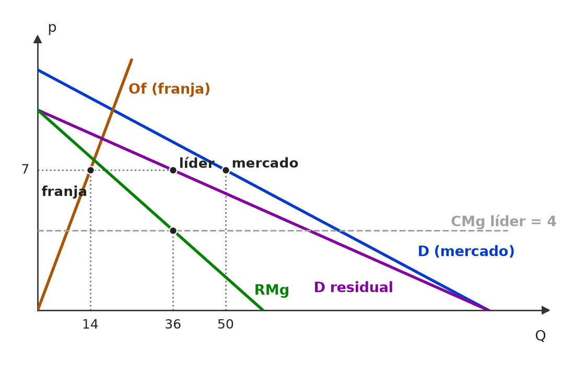
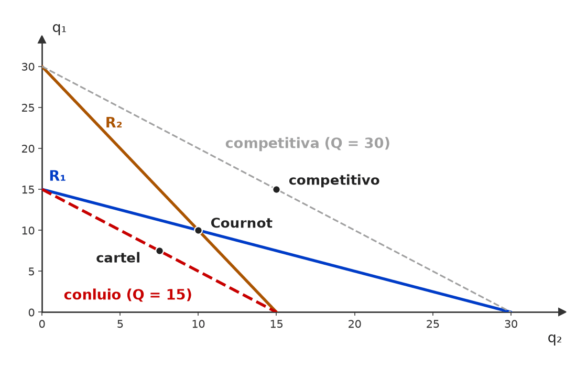

À esquerda, um computador por funcionário (proporções fixas): isoquantas em L, com vértices sobre o raio K = L; trabalhador sem máquina (ou máquina sem trabalhador) não produz nada a mais. À direita, o que o item descreveu: retas paralelas de inclinação −1, que só valem para substitutos perfeitos.

O preço da corrida de táxi não mudou (p₀); o estacionamento mais caro desloca a demanda por táxi para a direita (D₁ → D₂), e a quantidade passa de q₁ para q₂ AO MESMO PREÇO — sinal de que a curva andou, não de movimento ao longo dela.

Com o preço mínimo em 7 (acima do equilíbrio E, em 5), a demanda cai para 4. A oferta mais elástica (O₁) responde com 10 — excedente de 6; a menos elástica (O₂), com 8 — excedente de 4.

A publicidade bem-sucedida desloca a demanda para a direita (D₁ → D₂); a fidelização a deixa mais inclinada: ao mesmo preço, a quantidade reage menos a variações de preço (|ε| menor em D₂).

À esquerda, a retomada leva a economia de um ponto interior (A, com desemprego) para a fronteira (B): a FPP não se move. À direita, só mais fatores ou melhor tecnologia deslocam a própria fronteira (FPP₁ → FPP₂).

Demanda inelástica (quase vertical): o combate ao tráfico desloca a oferta para a esquerda (O₁ → O₂); o preço sobe muito, a quantidade cai pouco e o gasto total (retângulo p × q) aumenta.

O crédito ao consumidor desloca só a demanda (D₁ → D₂); a oferta (O), que depende de custos e tecnologia, fica onde está, e o mercado anda AO LONGO dela: preço e quantidade sobem (E₁ → E₂).

Custos menores deslocam a oferta para a direita (O₁ → O₂), o que, numa curva ascendente, é o mesmo que deslocá-la para baixo: cada quantidade passa a ser ofertada a preço menor. No novo equilíbrio, o preço cai e a quantidade sobe.

A campanha muda as preferências e desloca a demanda para a direita (D₁ → D₂); com a oferta parada, o equilíbrio vai de E₁ a E₂: sobem o preço e a quantidade transacionada (volume de negócios).

A oferta se desloca para a esquerda (O₁ → O₂) e o equilíbrio sobe ao longo da demanda: de E₁ para E₂ o preço aumenta (p₂ > p₁), mas a quantidade de equilíbrio diminui (q₂ < q₁).

Com a oferta constante, a demanda se desloca para a esquerda (D₁ → D₂) e o equilíbrio desce ao longo da oferta: de E₁ para E₂ caem juntos o preço (p₂ < p₁) e a quantidade (q₂ < q₁).

Com demanda inelástica, a contração da oferta (O₁ → O₂) leva o preço de 8 a 16 e a quantidade de 10 a 7: a receita passa de 80 para 112. O ganho no preço (verde, +56) supera a perda na quantidade (vermelho, −24).
aviso: rótulo 'E₁' é cortado pela curva S1

Pelo mesmo ponto inicial A passam as duas demandas por eletricidade. Com a mesma alta de tarifa (p₁ → p₂), a cidade que tem gás (curva mais plana) reduz muito mais o consumo do que a cidade só com aquecimento elétrico.

Oferta com elasticidade zero é vertical em Q*: quando a demanda aumenta (D → D′), a quantidade não muda e só o preço sobe (P → P′). A demanda determina unicamente o preço.

Demanda muito inelástica (quase vertical): o imposto t eleva o preço pago pelo consumidor (p₀ → pc) quase no valor inteiro de t, enquanto o preço recebido pelo vendedor quase não cai (p₀ → pv). O ônus fica com quem não consegue fugir do consumo.
aviso: rótulo 'PM' é cortado pela curva D

Com demanda horizontal (perfeitamente elástica), o preço ao consumidor não sai de p₀: o imposto t aparece inteiro como queda do preço recebido pelo vendedor (p₀ → pv). A receita (verde) e o peso morto (vermelho) saem do excedente do produtor.

À esquerda, a demanda linear: inclinação constante, mas |ε| cai à medida que se desce pela curva (4 em A, 1 em M, 0,25 em B). À direita, a exceção: na curva isoelástica P = 20/Q, os retângulos de gasto são iguais e ε = −1 em todos os pontos.

Na reta Q = 10 − P, a inclinação é a mesma em todos os pontos, mas |ε| = P/Q muda: elástica acima do ponto médio M, unitária em M (P = 5, Q = 5) e inelástica abaixo dele.

Os dois extremos da elasticidade-preço: com ε = 0 (perfeitamente inelástica), a quantidade não reage ao preço — curva vertical; com |ε| infinita (perfeitamente elástica), o preço é um só e a quantidade pode ser qualquer — curva horizontal.

Pelo mesmo ponto inicial A passam a demanda de curto prazo (íngreme) e a de longo prazo (mais plana). A mesma alta de preço (p₁ → p₂) reduz pouco a quantidade no curto prazo e muito no longo prazo.

À esquerda, demanda horizontal (perfeitamente elástica): ao preço p* compra-se qualquer quantidade; um centavo acima, nada. À direita, demanda vertical (perfeitamente inelástica): a quantidade q* não muda, seja qual for o preço.

Na demanda linear a inclinação é constante, mas a elasticidade não: |ε| = (ΔQ/ΔP)·(P/Q) vai de infinito no intercepto do preço (B) a 1 no ponto médio (C) e a zero no intercepto da quantidade (A).

Consumidores e produtores perdem toda a faixa entre pc e pv até q₀; o governo recupera só o retângulo verde (receita). O triângulo vermelho — o peso morto — é a perda que ninguém recebe, e por isso a receita fica abaixo da perda de excedentes.

Com as mesmas curvas, dobrar o imposto (de 2 para 4) dobra a base e a altura do triângulo de peso morto: a área quadruplica (de 1 para 4). O peso morto cresce com o quadrado da alíquota.
aviso: [painel 1] rótulo 'PM' é cortado pela curva D
aviso: [painel 1] rótulo 'PM' é cortado pela curva S

O mesmo teto (abaixo do equilíbrio E) gera escassez pequena no curto prazo, quando oferta e demanda são inelásticas (falta 2), e grande no longo prazo, quando ambas ficam elásticas (falta 8).

Na caixa de Edgeworth, a dotação inicial ω fica fora da curva de contrato: as curvas de indiferença de A e B se cruzam ali e formam uma lente (área sombreada) de trocas que melhoram os dois. Um ponto como P, sobre a curva de contrato e dentro da lente, deixa ambos melhor que em ω; ali as curvas são tangentes, a lente desaparece e a alocação é Pareto-eficiente.

A curva de contrato liga todos os pontos em que uma curva de indiferença de A tangencia uma de B (T₁, T₂, T₃). Em cada um, melhorar A exige piorar B: todos são Pareto-eficientes. A dotação inicial só decide em qual ponto da curva as trocas terminam.

O preço mínimo só tem efeito se fixado acima do equilíbrio (p*): nesse preço os produtores querem vender Qˢ, mas os consumidores só compram Qᴰ — sobra produto (excedente de oferta), que o governo costuma comprar e estocar.
aviso: rótulo 'preço mínimo' é cortado pela curva S

Demanda inelástica (íngreme) e oferta elástica (plana): o imposto t eleva muito o preço pago pelo comprador (p₀ → pc) e reduz pouco o recebido pelo vendedor (p₀ → pv). A maior parte da cunha fica com o comprador.
aviso: rótulo 'Receita' é cortado pela curva St
aviso: rótulo 'PM' é cortado pela curva D
aviso: rótulo 'E₀' é cortado pela curva S

O mesmo imposto t sobre curvas íngremes (inelásticas) quase não reduz a quantidade, e o peso morto (PM) é um triângulo fino; sobre curvas planas (elásticas), a quantidade cai muito e o PM fica bem maior.
aviso: [painel 2] rótulo 'Receita' é cortado pela curva St

O subsídio s desloca a oferta para baixo (O → O − s): o comprador paga pc, abaixo de p₀, e o vendedor recebe pv, acima. Produz-se além de q₀; o gasto do governo (retângulo amarelo) supera o ganho somado de consumidores e produtores, e a diferença é o peso morto (triângulo vermelho).

Com as mesmas curvas, dobrar a alíquota (t → 2t) dobra a base e a altura do triângulo do peso morto (PM): a perda de eficiência quadruplica, e a fatia que cabe ao produtor cresce junto.
aviso: [painel 1] rótulo 'PM' é cortado pela curva D
aviso: [painel 1] rótulo 'PM' é cortado pela curva S
aviso: [painel 2] rótulo 'Receita' é cortado pela curva St

Mesmo imposto t nos dois painéis. À esquerda (demanda inelástica, oferta elástica), quase toda a cunha aparece como alta de pc: o consumidor paga. À direita (demanda elástica, oferta inelástica), a cunha aparece como queda de pv: o produtor paga.
aviso: [painel 1] rótulo 'Receita' é cortado pela curva St
aviso: [painel 1] rótulo 'PM' é cortado pela curva D
aviso: [painel 2] rótulo 'PM' é cortado pela curva S

Demanda elástica (plana) e oferta inelástica (íngreme): o preço pago pelo comprador sobe pouco (p₀ → pc), e o recebido pelo vendedor despenca (p₀ → pv). Quem não consegue fugir do imposto — aqui, o produtor — arca com a maior parte.
aviso: rótulo 'PM' é cortado pela curva S
aviso: rótulo 't' é cortado pela curva St
aviso: rótulo 'E₀' é cortado pela curva D

O imposto t desloca a oferta para cima (O → O + t): a quantidade cai de q₀ para qₜ, o comprador paga pc > p₀ e o vendedor recebe pv < p₀. Parte do excedente vira receita (retângulo); o triângulo é o peso morto das trocas que deixaram de ocorrer.

Cobrado do comprador, o imposto desloca a demanda para baixo em t (D → D − t): o vendedor passa a receber pv e o comprador paga pc = pv + t. Mesma cunha, mesma quantidade qₜ e mesmo peso morto do imposto cobrado do vendedor.
aviso: rótulo 'E₀' é cortado pela curva S

Utilidade linear U = x₁ + x₂ (curvas de indiferença retas, TMS = 1) e reta orçamentária mais inclinada (p₁/p₂ = 2): a curva de indiferença mais alta que a renda alcança toca a reta só no eixo — o consumidor gasta tudo em x₂ e não consome x₁ (solução de canto).

A oferta de curto prazo (trecho vermelho) começa no ponto de fechamento F, mínimo do CVMe, e não em N, mínimo do CMe (lucro zero). Com preço entre F e N, a firma produz com prejuízo, porque a receita ainda cobre o custo variável e parte do fixo.

Com demanda de elasticidade unitária (P·Q constante, uma hipérbole), dobrar o preço de 5 para 10 reduz a quantidade à metade, de 4 para 2: os dois retângulos de receita têm a mesma área (20).

Energia mais cara desloca a OFERTA para a esquerda (O₁ → O₂): o preço sobe de p₁ para p₂ e a quantidade cai. O novo equilíbrio é alcançado por movimento ao longo da DEMANDA, de E₁ para E₂.

Com x₁ neutro e x₂ desejado, a utilidade depende só de x₂: cada curva de indiferença é uma reta horizontal, paralela ao eixo do bem neutro. Andar para a direita (mais x₁) não muda a utilidade; subir (mais x₂) leva a curvas mais altas.

Café (x₁) e açúcar (x₂) sempre na proporção 1:1 são complementares perfeitos, U = min(x₁, x₂): as curvas de indiferença têm formato de L, com o vértice sobre o raio x₂ = x₁. Café ou açúcar a mais, sozinho, não eleva a utilidade.

O progresso técnico só na informática gira a FPP para fora a partir do intercepto de automóveis, que não muda. Em todo o interior, FPP₂ fica acima de FPP₁: a economia pode sair de A para B, com mais computadores E mais automóveis.

À esquerda de E, CMg < CTMe e a média cai; à direita, CMg > CTMe e a média sobe. O CMg corta o CVMe e o CTMe em seus pontos mínimos.
aviso: rótulo 'E' é cortado pela curva CTMe

Com w = r, a isocusto C₁ tangencia a isoquanta em A (K/L = 1). Se r quadruplica, a isocusto fica mais plana (inclinação w/r = 1/4) e a nova tangência B usa mais trabalho e menos capital (K/L = 1/4).

A epidemia desloca a demanda para a esquerda (D₁ → D₂); livre, o preço cairia (E₂). Com o preço fixado em 5, compram-se só 6 unidades (eram 10) e os produtores seguem ofertando 10: excesso de oferta de 4.
aviso: rótulo 'E₁' é cortado pela curva S

Com demanda horizontal, o preço ao consumidor não pode subir: o imposto t desloca a oferta para cima, a quantidade cai de q₀ para qₜ e o preço recebido pelo vendedor cai exatamente t. O vendedor arca com todo o imposto, mas o mercado continua existindo.

A oferta reflete só o custo privado (CMgP). Somado o custo imposto a terceiros, o custo social (CMgS) fica acima: o mercado para em Eₘ, produzindo qₘ — mais que o ótimo social q* (E*) — a um preço baixo demais. O triângulo vermelho é o peso morto da externalidade negativa.

Com a demanda parada, a redução da oferta (O₁ → O₂) leva o mercado de E₁ a E₂: o preço sobe (p₁ → p₂) e a quantidade cai — o preço “acusa” a maior escassez.

Curva de demanda (D) e curva de custo marginal (C) de um produto sob monopólio natural; CMg e p na mesma escala do eixo vertical.

O monopolista produz onde a receita marginal (RMg, abaixo da demanda) cruza o custo marginal C: quantidade Qm, menor que a do cruzamento de D com C (Qc), vendida ao preço pm lido na demanda, acima do custo marginal.

Com P = 300 − Q, RMg = 300 − 2Q e CMg = 2Q, o monopolista produz 75 (RMg = CMg = 150) e cobra 225 na demanda. Com preço igual ao CMg, produz-se 100 a 200; o triângulo entre 75 e 100 é o peso morto de 937,5.
aviso: rótulo 'M' é cortado pela curva D

O monopolista produz qm, onde RMg = CMg, e cobra pm na demanda (ponto M). Entre qm e qc, cada unidade vale para o consumidor mais do que custa (D acima do CMg), mas não é produzida: o triângulo PM é o peso morto.

Na demanda linear, a RMg zera no ponto médio, onde |ε| = 1. Como o CMg é positivo, RMg = CMg só ocorre com RMg > 0 — à esquerda do ponto médio, no trecho elástico.

Sem imposto, a firma produz onde a demanda (benefício marginal) corta o seu custo marginal privado: Qₘ, quantidade excessiva. O imposto pigouviano t, igual ao dano marginal, leva o custo privado até o custo social (CMgP + t = CMgS) e o novo equilíbrio cai no ótimo Q*, onde BMg = CMgS.

Em concorrência perfeita, a oferta é o custo marginal PRIVADO; com externalidade negativa, o mercado para em Qₘ, além do ótimo social Q* (onde BMg = CMgS). Entre Q* e Qₘ, cada unidade custa à sociedade mais do que vale: o triângulo vermelho é o peso morto da externalidade.

Dobrar os dois preços com a renda fixa (80) equivale a cortar a renda real pela metade: a reta orçamentária se desloca paralelamente para dentro (mesma inclinação p₁/p₂ = 2,5) e o ótimo passa de E₁ = (4; 10) para E₂ = (2; 5).

O ótimo E = (4; 10) é o ponto em que a curva de indiferença mais alta alcançável (x₁x₂ = 40) tangencia a reta orçamentária: ali TMS = x₂/x₁ = 2,5 = p₁/p₂. Em A e B a curva U = 24 corta a reta — a TMS difere da razão de preços e ainda dá para melhorar.

Com U = x₁x₂ e preços fixos (p₁ = 10, p₂ = 4), dobrar a renda de 80 para 160 desloca a restrição em paralelo e leva o ótimo de (4; 10) para (8; 20): os dois ótimos estão no mesmo raio x₂ = 2,5·x₁, a curva renda-consumo de preferências homotéticas.

Se I₁ e I₂ se cruzassem em A, teríamos A ~ C (ambas em I₁) e A ~ B (ambas em I₂); pela transitividade, B ~ C. Mas B tem o mesmo x₁ e mais x₂ que C, logo B ≻ C: contradição. Curvas de níveis distintos não se cruzam.

O excedente do consumidor é a área entre a demanda e a linha do preço — não toda a área sob a demanda. Quando o preço sobe de p₁ para p₂, o EC encolhe para o triângulo de cima; a faixa vermelha é o que os consumidores perdem.

Preço mínimo acima do equilíbrio: só se vende qᴰ. O produtor ganha o retângulo A (tirado do consumidor) e perde o triângulo C; o consumidor perde A + B. Em geral A > C e o EP aumenta, mas B + C é peso morto — e sobra o excesso de oferta qˢ − qᴰ.
aviso: rótulo 'E' é cortado pela curva D

Mesmo preço garantido pₛ, demanda inelástica. Comprando estoques, o governo paga pₛ × (qˢ − qᴰ): a faixa estreita. Pagando a diferença (subsídio), precisa de pₘ muito baixo para o mercado absorver qˢ e paga (pₛ − pₘ) × qˢ: o retângulo bem maior.

No monopólio natural, o CMe cai em toda a faixa da demanda e o CMg fica abaixo dele. Com preço = CMg (ponto R), a firma vende 100 a 2, mas seu custo médio é 4: o retângulo destacado é o prejuízo (2 × 100 = 200). Com preço = CMe (ponto A), ela empata, porém produz menos.

Na concorrência perfeita, a demanda da firma é horizontal e toca o CMe no mínimo: P = CMg = CMe. Na concorrência monopolística, a demanda inclinada toca o CMe antes do mínimo: P = CMe, mas o preço fica acima do CMg (a seta vermelha é o markup) e a firma produz menos que a escala eficiente.

Com preço único, o monopolista para em qm (RMg = CMg) e deixa o triângulo de peso morto (PM). Discriminando perfeitamente, vende cada unidade pelo preço de reserva, vai até qc (P = CMg) e transforma todo o excedente em lucro: o peso morto desaparece.

No longo prazo, a demanda da firma (inclinada) só toca o CMe no trecho descendente, em E: lucro zero, mas com q* à esquerda da quantidade de custo médio mínimo. A distância entre q* e q mín. é a capacidade ociosa; e, em q*, o preço fica acima do CMg.

A CMeLP envolve as curvas de curto prazo por baixo, mas só toca o MÍNIMO de uma delas onde ela própria é mínima (T₂). No trecho de economias de escala, a tangência T₁ fica à esquerda do mínimo M₁; no de deseconomias, T₃ fica à direita de M₃.
aviso: rótulo 'CMeLP' é cortado pela curva CP1

Demanda P = 14 − Q e custo marginal constante 2: a quantidade total cresce de monopólio/cartel (6) para Cournot (8), Stackelberg (9) e Bertrand = concorrência perfeita (CP, 12), e o preço cai na mesma ordem (8, 6, 5, 2).

Da esquerda para a direita, a substituição fica mais difícil e a curvatura aumenta: reta (substitutos perfeitos, convexidade nula, TMS constante), curva usual (TMS decrescente) e L (complementares perfeitos, curvatura máxima).

Ao preço p, a firma produz q* (p = CMg). Somando, unidade a unidade, a diferença entre o preço e o custo marginal obtém-se RT − CVT: é o excedente do produtor, igual a lucro + custo fixo. O custo fixo não aparece no gráfico porque não mexe no CMg.

Com demanda vertical, a oferta sobe t (O → O + t) e o preço ao consumidor sobe exatamente t; o vendedor continua recebendo p₀. A quantidade não muda (q₀): o imposto é pura transferência (retângulo) e não há triângulo de peso morto.
aviso: rótulo 'Eₜ' é cortado pela curva St

Com oferta horizontal (ε = ∞), o imposto t eleva a oferta de O para O + t: o preço ao consumidor sobe exatamente t e o produtor continua recebendo p₀. Todo o ônus fica com o consumidor; a quantidade cai de q₀ para qₜ, com peso morto.
aviso: rótulo 'E₀' é cortado pela curva D

Na demanda linear, a RMg zera no ponto médio, onde |ε| = 1. Abaixo dele (trecho inelástico) a RMg é negativa e não pode igualar um CMg positivo: o ótimo do monopolista (RMg = CMg) cai sempre no trecho elástico.

A demanda de mercado reflete só o benefício privado (BMgP); somado o benefício externo, a curva social (BMgS) fica acima. O mercado para em Qₘ, abaixo do ótimo Q*: o triângulo vermelho é o bem-estar perdido pela subvacinação.

Mesma oferta, mesmo imposto t. Com demanda inelástica (esquerda), a quantidade quase não cai: receita grande e peso morto (vermelho) minúsculo. Com demanda elástica (direita), a base encolhe: receita menor e peso morto maior.
aviso: [painel 2] rótulo 'Receita' é cortado pela curva St

Com oferta vertical, a quantidade é fixa. Visto pelo vendedor, o imposto desloca a demanda para baixo em t (D → D − t): o consumidor continua pagando p₀ e o produtor passa a receber p₀ − t. Ônus integral do produtor, quantidade intacta, nenhum peso morto.

O custo externo desloca o custo social para cima do privado (CMgS acima de CMgP). O mercado iguala CMgP à demanda e produz Qₘ; o ótimo social, onde CMgS cruza a demanda, é Q*, menor e com preço maior. O triângulo vermelho é o peso morto da sobreprodução.

No monopólio natural o CMe cai em toda a faixa relevante e fica acima do CMg. Com preço = CMg (ponto C), a produção é eficiente, mas o preço não cobre o custo médio: o retângulo sombreado entre o CMe e o CMg é o prejuízo. Com preço = CMe (ponto R), o lucro é zero e a operação se sustenta.

Gráfico 1 — curva de demanda do bem x, que se desloca no tempo de D1 para D2.

À esquerda, cai o preço do próprio bem x e o consumidor anda AO LONGO da mesma curva (A → B). À direita, muda outro determinante da demanda e a CURVA INTEIRA se desloca (D₁ → D₂), como no Gráfico 1.

Se y é complementar de x, o aumento do preço de y desloca a demanda de x para a ESQUERDA (D1 → D0) — o contrário do Gráfico 1. Para ir de D1 a D2, y teria de ser substituto.

O monopolista produz qm (RMg = CMg) e cobra pm, acima do CMg. Entre qm e qc há consumidores que pagariam mais que o custo de produzir e não compram: esse triângulo (PM) é o peso morto. O lucro é máximo, mas o excedente total não.

O mercado (à direita) tem demanda negativamente inclinada e fixa o preço P* no cruzamento com a oferta. A firma (à esquerda) toma P* como dado: sua demanda é a reta horizontal d = RMe = RMg = P*.

Com CT = 1.200 + 30q + 3q², a oferta é o CMg (P = 30 + 6q), que parte do mínimo do CVMe (R$ 30). Dividir CT por q dá o CTMe, que só encontra o CMg no seu mínimo (q = 20; R$ 150): igualar P ao CTMe dá lucro zero, não a oferta.

Para cada quantidade, o custo social soma ao privado o custo externo marginal (seta): por isso CMgS fica acima de CMgP. Com dano crescente, as curvas se afastam à direita, e o CMgS cruza a demanda antes do CMgP (Q* < Qₘ).

O imposto t, igual à distância entre CMgS e CMgP medida em Q*, eleva o custo privado para CMgP + t, que cruza a demanda exatamente no ótimo social. Medida em Qₘ, a distância seria maior e o imposto, excessivo.

A cunha t se reparte conforme as elasticidades. À esquerda (oferta elástica, demanda inelástica), pc sobe quase t inteiro: o consumidor arca com a maior parte. À direita (oferta inelástica, demanda elástica), pv cai quase t inteiro: o produtor arca com a maior parte.

Na parte elástica da demanda p = 10 − q, subir o preço de 6 para 8 ganha 4 nas unidades que continuam vendidas (área verde), mas perde 12 nas que deixam de ser vendidas (área vermelha): a receita cai de 24 para 16.

Complementos perfeitos (proporção fixa 1:1): curvas em L com vértices sobre o raio x₂ = x₁. A TMS é infinita no trecho vertical, nula no horizontal e indefinida no vértice — nunca “crescente”.

Ao longo da curva de indiferença bem comportada, a inclinação cai em módulo: em A (pouco x₁, muito x₂) a |TMS| é 4; em B (muito x₁, pouco x₂), só 1/4. É a TMS decrescente que dá a forma convexa.

Retas paralelas = substitutos perfeitos (troca a taxa constante, TMS = −1); curvas em L = complementares perfeitos (proporção fixa, como sapato esquerdo e direito). O formato em L pertence aos complementares.

Preferência bem comportada: o ótimo E é a tangência, com TMS = p₁/p₂. Substitutos perfeitos (|TMS| = 1) com p₁/p₂ = 1/2: a curva mais alta alcançável toca a restrição só no eixo — solução de canto, sem igualdade.

Qᴰ = 300 − 30p e Qˢ = 10p + 20 se cruzam em (90; 7); a demanda zera em p = 10. O excedente do consumidor é o triângulo entre a demanda e o preço: (10 − 7) × 90 ÷ 2 = 135.

Com o preço tabelado em 6 (abaixo do equilíbrio de 7), demanda-se 120 e oferta-se 80: falta produto — excesso de DEMANDA de 40 unidades.

O imposto de R$ 1 eleva a oferta em 1 (O → O + 1). O equilíbrio sai de (90; 7) para Q = 82,5: o consumidor paga 7,25 (+0,25) e o produtor recebe 6,25 (−0,75). A demanda, mais elástica, empurra a maior parte do imposto para o produtor.

x e y estão na mesma curva de indiferença; a média m fica acima dela, na região sombreada das cestas preferidas. Preferência convexa = o conjunto de cestas “pelo menos tão boas” é convexo: médias valem mais que extremos.

Com P = 120 — acima do mínimo do CVMe (30), abaixo do mínimo do CTMe (150) —, a firma produz q = 15, onde P = CMg, e perde (155 − 120) × 15 = 525: menos que os 1.200 de custo fixo que perderia parando. Lucro de curto prazo negativo, e mesmo assim ela produz.

Sem regulação, o monopolista produz qm ao preço pm. Com teto em pt (entre pm e o CMg), a receita marginal vira o próprio teto até a demanda: ele passa a vender qt > qm. A quantidade aumenta, não há excesso de demanda e o peso morto encolhe para o triângulo entre qt e qc.

Oferta íngreme (pouco elástica) e demanda mais plana (mais elástica): o imposto t eleva pouco o preço pago pelo consumidor (p₀ → pc) e derruba muito o preço líquido recebido pelo produtor (p₀ → pv). Quem tem a curva mais inelástica arca com a maior parte do imposto.
aviso: rótulo 'E₀' é cortado pela curva D

Com demanda horizontal (infinitamente elástica), o preço pago pelo consumidor não sai de p₀: o imposto desloca a oferta para cima (O → O + t), a quantidade cai e o preço líquido do vendedor cai no valor INTEIRO do imposto (p₀ → pv).
aviso: rótulo 'E₀' é cortado pela curva S

Com oferta horizontal (infinitamente elástica), o imposto desloca a oferta para cima no valor de t: o preço ao consumidor sobe o imposto inteiro (p₀ → pc) e a quantidade cai (q₀ → q₁). Preço e quantidade mudam — só o preço líquido do vendedor fica igual.

Mesma oferta, mesmo imposto t, mesmo equilíbrio inicial E₀. Com demanda inelástica (à esquerda), a quantidade quase não cai; com demanda elástica (à direita), cai muito (q₀ → q₁). Quanto mais elástica a demanda, menor a quantidade transacionada após o imposto.
aviso: [painel 2] rótulo 'E₀' é cortado pela curva D
aviso: [painel 2] rótulo 'E₁' é cortado pela curva D

Sem teto, o monopolista iguala RMg = CMg, vende Qm ao preço Pm. Um preço máximo entre Pm e o custo marginal faz a firma vender até a demanda (Qmáx > Qm): o preço cai, a quantidade sobe, sem desabastecimento, e o peso morto encolhe (área verde recuperada; sobra só o vermelho).
aviso: rótulo 'Ec' é cortado pela curva CMg

À esquerda, política de COMPRA: o preço fica em Pmín, os consumidores levam Qd, e o governo compra o excedente (Qs − Qd) pagando Pmín por unidade (área amarela). À direita, pagamento da DIFERENÇA (subsídio): toda a produção Qs é vendida no mercado ao preço p, e o governo paga Pmín − p por unidade — é o que o item descreve.

Com o teto abaixo do equilíbrio, os produtores só oferecem qˢ e os consumidores querem qᴰ: a quantidade efetivamente transacionada cai de q₀ para qˢ (o lado curto do mercado manda), e surge escassez de qᴰ − qˢ.
aviso: rótulo 'E₀' é cortado pela curva D

Salário mínimo acima do equilíbrio (wmín > w₀): as empresas contratam só L₁ e os trabalhadores ofertam L₂. O desemprego é L₂ − L₁; abaixo do equilíbrio, o piso não teria efeito.
aviso: rótulo 'E₀' é cortado pela curva DL

Isoquantas (Q) da função de produção com capital (K) e trabalho (L). (figura redesenhada; traçado aproximado)

Com o capital fixo, PMg e PMe do trabalho sobem e depois caem. Enquanto PMg > PMe, cada trabalhador novo puxa a média para cima; quando PMg < PMe, puxa para baixo. Por isso PMg corta PMe exatamente no máximo de PMe (ponto M).

Funções de produção y* e y** (insumo x no eixo horizontal; produto y no vertical). (figura redesenhada; traçado aproximado)

Isoquanta reta (substitutos perfeitos, TMST = 2) mais inclinada que a isocusto (w/r = 1): o menor custo é o canto E, só com trabalho. Uma combinação com os dois insumos, como M, exige isocusto mais alta (C₂).

Enquanto o PMg está acima do PMe, cada trabalhador extra puxa a média para cima; quando o PMg cai abaixo, puxa para baixo. Por isso o PMg corta o PMe exatamente no máximo do PMe (L = 6).

O imposto t abre uma cunha entre o preço pago pelo comprador (pc) e o recebido pelo vendedor (pv). EC (azul) e EP (ocre) são os excedentes que sobram; o retângulo verde é a receita do governo (t × qₜ); o triângulo vermelho (PM) é o peso morto — trocas que deixam de ocorrer entre qₜ e q₀.

No equilíbrio E, o excedente do consumidor (EC) é a área entre a demanda e o preço — o que os compradores pagariam a mais e não pagam; o excedente do produtor (EP) é a área entre o preço e a oferta — o que os vendedores recebem acima do custo marginal. A soma é o excedente total, máximo no equilíbrio competitivo.

Sem regulação, o monopolista natural fica em M (RMg = CMg): preço pm alto e quantidade qm baixa. Com o preço tabelado no CMg, o mercado vai a C: o consumidor paga menos e compra mais, e a área verde (+EC) é o ganho de excedente do consumidor. O ponto C fica abaixo do CMe: é a firma, não o consumidor, que perde.

Com renda e preço dos outros bens constantes, a alta do preço da energia mantém o intercepto R/pₒ e encolhe o de energia (R/pₑ): a reta GIRA para dentro e fica mais íngreme — muda a inclinação, não há deslocamento paralelo.

Indústria de custos decrescentes: a demanda sobe (D1 → D2) e o preço sobe no curto prazo (E2); a entrada de firmas e as economias externas baixam os custos e levam a oferta para S2. O novo equilíbrio de longo prazo (E3) tem preço menor que E1, e a oferta de longo prazo (OLP) que liga E1 a E3 é negativamente inclinada.

Em B, a TMST (1/4) é menor que w/r (1): a isocusto que passa por B custa 10. Trocando trabalho por capital ao longo da mesma isoquanta, a firma chega a A, onde TMST = w/r e o custo cai para 8 — o mínimo.
aviso: rótulo 'custo = 10' é cortado pela curva Q

No curto prazo, P = CMg só define a quantidade (q*). Se nesse ponto o preço supera o CTMe, há lucro econômico positivo (retângulo verde); é a entrada de novas firmas, no longo prazo, que empurra o preço até o mínimo do CTMe e zera o lucro.

No curto prazo, a firma escolhe q₁ (RMg = CMg) e cobra P₁ acima do CMe: há lucro. A entrada de concorrentes desloca a demanda de cada firma para a esquerda até ela tangenciar o CMe em q₂: lucro zero, com q₂ abaixo da escala de custo médio mínimo e P₂ acima do CMg.

Com x₁ e x₂ complementares perfeitos (1:1), o ótimo está sempre no vértice do L, sobre o raio x₁ = x₂. Quando p₁ dobra, a reta orçamentária gira para dentro e o ótimo desce pelo raio de E₁ (5; 5) para E₂ (3,3; 3,3): os DOIS bens caem na mesma proporção.

O mesmo bem de Giffen em dois gráficos: na curva de Engel (quantidade × renda) a inclinação é negativa, porque todo Giffen é inferior; é a curva de demanda (preço × quantidade) que sobe e contraria a lei da demanda.

Com o preço P entre o mínimo do CVMe e o mínimo do CTMe, a firma produz onde P = CMg e tem prejuízo (retângulo vermelho), mas a receita cobre todo o custo variável e parte do custo fixo (retângulo verde). Parada, perderia o custo fixo inteiro (vermelho + verde).

A oferta de curto prazo da firma competitiva (em vermelho) é o trecho do CMg acima do mínimo do CVMe, o ponto de fechamento F. Entre F e o ponto de nivelamento N, a firma produz com prejuízo; abaixo de F, produz zero. O mínimo do CTMe só decide a saída no longo prazo.

A utilidade total sobe enquanto a UMg é positiva, atinge o máximo (150) no ponto de saciedade, onde UMg = 0 (Q = 6), e cai daí em diante: além de 6, cada unidade tem utilidade marginal negativa.

Curvas de Engel com preços constantes: crescentes para bens normais (côncava na necessidade, convexa no luxo) e decrescente para o bem inferior — a inclinação é o sinal da elasticidade-renda.

Longo prazo na concorrência monopolística: a demanda da firma tangencia o CMe em q* (P = CMe, lucro zero), mas o preço fica acima do CMg — e q* fica à esquerda da escala eficiente (CMe mínimo): capacidade ociosa.

Ao longo de um mesmo raio (K/L fixo), cada +100 unidades de produto exige um acréscimo de insumos. Com rendimentos constantes, os saltos são iguais; com rendimentos crescentes, cada vez menores — as isoquantas se APROXIMAM.
aviso: [painel 1] rótulo 'A' é cortado pela curva R
aviso: [painel 1] rótulo 'B' é cortado pela curva R
aviso: [painel 1] rótulo 'C' é cortado pela curva R

Cada isocusto mais alta (C₁ < C₂ < C₃) tangencia uma isoquanta mais alta nos pontos de custo mínimo A, B e C. A linha que une essas tangências é o caminho de expansão.
aviso: rótulo 'A' é cortado pela curva Q1
aviso: rótulo 'A' é cortado pela curva C1
aviso: rótulo 'B' é cortado pela curva Q2
aviso: rótulo 'B' é cortado pela curva C2
aviso: rótulo 'C' é cortado pela curva Q3
aviso: rótulo 'C' é cortado pela curva C3

Com o capital travado em K̄, a firma só pode ficar em A, onde a reta K = K̄ corta a isocusto: alcança apenas q₁. No longo prazo, gastando o mesmo, desloca-se para B, tangência entre isocusto e isoquanta, e alcança q₂ > q₁.

Na vacina, a externalidade está no consumo: o benefício marginal social (BMgS) fica acima da demanda privada (D = BMgP), enquanto a oferta (O = CMg, privado igual ao social) não muda. O mercado para em qm, abaixo do ótimo q*; o triângulo vermelho (PM) é o peso morto da subvacinação.
aviso: rótulo 'Eₘ' é cortado pela curva D

Em concorrência, produz-se até qc, onde p = CMg. O cartel age como monopolista: restringe a produção a qm (RMg = CMg) e cobra pm. O triângulo PM é o peso morto: trocas que valiam mais do que custavam e deixaram de ocorrer.

Cada 2 unidades adicionais de X custam cada vez mais Y (0,3 → 0,8 → 1,6 → 5,3): custo de oportunidade crescente, que dá à FPP o formato côncavo.

Em A e B a curva U₁ corta a reta orçamentária (RO): há cestas melhores na própria reta. U₃ é inalcançável com a renda dada. O ótimo E está sobre a RO, no ponto em que ela tangencia U₂, a curva mais alta que se consegue atingir (TMS = pₓ/pᵧ).

Meta: abater 16 toneladas no total. Com a taxa t = 6, a firma 1 (abatimento barato) reduz 12 e a firma 2 reduz 4, e os custos marginais se igualam em 6 (custo total 48). Com o limite uniforme (8 para cada), os custos marginais ficam desiguais (4 × 12) e o custo total sobe para 64.

A renda sobe e a restrição orçamentária se desloca paralelamente (R₀ → R₁). Com curvas de indiferença convexas, mas com este formato, a nova tangência E₁ tem MAIS do bem normal e MENOS do bem x (x₁ < x₀): x é inferior.

A entrada de um concorrente desloca a demanda da firma estabelecida para dentro (d₁ → d₂): ela passa de E₁ (lucro, área verde) a E₂, com preço e quantidade menores, até a demanda só tangenciar o CMe (lucro zero).
aviso: rótulo 'E₁' é cortado pela curva d1

Demanda de mercado Q = 120 − 10p e franja Qf = 2p. A líder enfrenta a demanda residual (D − Of), iguala RMg ao seu CMg = 4 e produz 36, ao preço 7. A esse preço o mercado pede 50: a franja supre os 14 restantes.
aviso: rótulo 'líder' é cortado pela curva D
aviso: rótulo 'franja' é cortado pela curva Of

Com u = x + y (curvas de indiferença retas de inclinação −1): à esquerda, pₓ = 2pᵧ e a reta orçamentária é mais íngreme que as curvas; a mais alta, U₂, só é tocada no eixo y (canto C). À direita, pₓ = pᵧ e a reta coincide com U₂: todas as cestas do segmento são ótimas, inclusive as interiores.

Com CMe decrescente, o CMg fica sempre abaixo dele. Preço = CMg (ponto C) dá a quantidade eficiente, mas a receita não cobre o custo médio: o retângulo vermelho é o prejuízo. Preço = CMe (ponto R) zera o lucro e torna o serviço viável, com quantidade entre a de monopólio (M) e a eficiente.

O imposto de 30% sobre o lucro achata a curva de lucro (π vira 0,7·π), mas não muda onde fica o topo: a quantidade que maximiza o lucro antes do imposto, q*, é a mesma que maximiza o lucro depois dele. Preço e quantidade não mudam; só o lucro líquido cai.

Suponha que U₁ e U₂ se cruzem em A. Então A ~ B (sobre U₁) e A ~ D (sobre U₂); pela transitividade, B ~ D. Mas D tem o mesmo x e mais y que B, logo D ≻ B. Contradição: curvas de níveis distintos não podem se cruzar.

Bem público: a curva social ΣBMg é a soma VERTICAL das curvas individuais (em cada quantidade, somam-se as disposições a pagar). O nível eficiente q* = 2 está onde ΣBMg = CMg: 3,50 (pessoa 1) + 2,00 (pessoa 2) = 5,50.

Quando o preço sobe de p₁ para p₂, o consumidor perde A (o gasto a mais com as unidades que continua comprando, q₂) e B (o excedente das unidades que deixou de comprar, entre q₂ e q₁). O item só conta A.

Soma horizontal: ao preço 8, a firma A oferta 6 e a firma B, 8; o mercado oferta 14. Abaixo de p = 4 só a firma A produz — daí a quebra na oferta de mercado.

Duopólio com P = 30 − Q e custo zero. As funções de reação R₁ e R₂ se cruzam no equilíbrio de Cournot (10; 10), com lucro conjunto de 200. Qualquer ponto da curva de conluio (q₁ + q₂ = 15), como o cartel simétrico (7,5; 7,5), dá o lucro de monopólio, 225: em conjunto, o cartel sempre lucra mais.

Na mesma isoquanta, de A para B uma unidade de L substitui 3 de K (TMST = 3); de C para D, só 0,5 de K (TMST = 0,5). Quanto mais abundante o trabalho, menos capital ele consegue substituir: TMST decrescente = isoquanta convexa.

Enquanto o CMg cai, ele está abaixo do CMe e puxa a média para baixo. Depois do seu mínimo, o CMg já sobe, mas, enquanto continua abaixo do CMe, a média ainda cai; só no cruzamento (mínimo do CMe) a média para de cair e passa a subir.

Com oferta vertical (elasticidade zero), a quantidade fica travada em q*: quando a demanda se desloca (D₁ → D₂), só o preço muda (p₁ → p₂). A posição da demanda decide o preço; a oferta decide a quantidade.